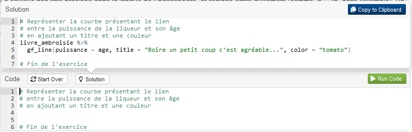
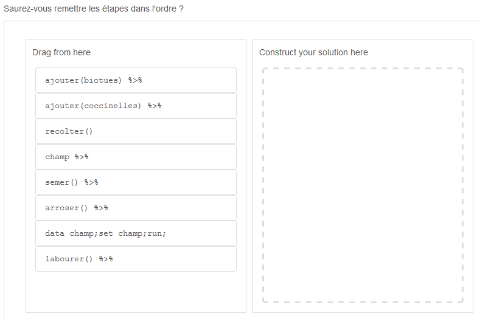
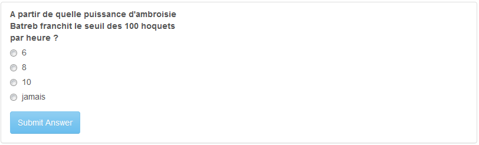

le grimoire
Le grimoire (appelé grimoire IGoR dans le jeu icaRius) se constitue d'une collection de tutoriels établis en Rmarkdown, eux-mêmes réunis sous la forme d'un package FuncampR. La quasi totalité des tutoriels utilisent le package learnr pour proposer des exercices appliqués, dans lequel le stagiaire accède à une console pour apprendre la syntaxe R et exécuter du code en ligne. Certains d'entre eux utilisent en outre le package parsons, pour apprendre à composer les segments d'un traitement en R en les assemblant comme les pièces d'un puzzle. Les tutoriels avec learnr et parsons sont orchestrés en runtime:shiny_prerendered. A noter qu'un tutoriel fait exception : dédié à l'apprentissage des méthodes de documentation d'un code, il mobilise le package shinyAce et se trouve orchestré en runtime:shiny (voir chapitre 12).
Structuration du package
Le package est structuré de la façon suivante :
- répertoire
inst: il est lui même composé du sous-répertoirelearnrregroupant l'ensemble des tutoriels, et du sous-répertoiredataregroupant les fichiers de données utilisées pour les tutoriels. Chaque tutoriel est présenté comme un "chapitre" du grimoire (et se trouve positionné dans un sous-répertoire de typechapitreXX). - répertoire
R: s'y trouve le programme code.R, qui permet : -- de scanner l'ensemble des fichiers Rmd éligibles à être proposés comme tutoriel (fonctiontous_les_programmes()) -- de lancer un support Rmd (fonctionlaunch_learn()) - répertoire
man: documentation des fonctions citées supra.
Fonctionnalités pour les exercices
L'utilisation du package learnr permet de proposer des exercices interactifs, avec une console R intégrée, pour laquelle il est possible de faire apparaître une solution en aide au stagiaire

Des quizz sont également proposés : à la fin de chaque tutoriel, ils permettent de vérifier que le stagiaire a résolu l'énigme, et de lui confirmer la réponse à renseigner dans le jeu icaRius.

Enfin, le package parsons propose des exercices sous forme de "puzzle", mettant l'accent sur le bon ordonnancement des briques d'un traitement.
